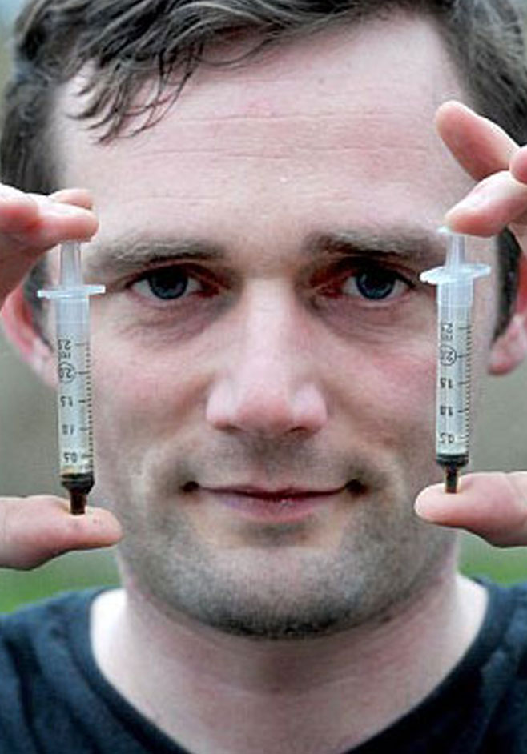
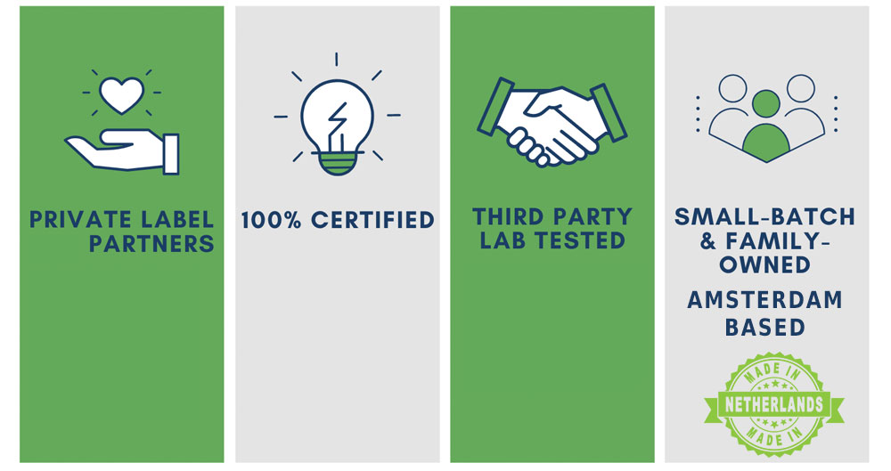

-



Optimiziraneto na terapevtichnata upotreba na RSO mozhe da bŭde predizvikatelstvo kakto za lekarite, taka i za patsientite. Povecheto lekari nikoga ne sa nauchili za RSO v meditsinskoto uchilishte i spored prouchvane ot 2017 g. maltsina smyatat, che sa kvalifitsirani da sŭvetvat patsientite otnosno dozirovkata i upotrebata na takiva produkti. Za da pomognem na vseki, koĭto tŭrsi poveche informatsiya, nie provedokhme nashe sobstveno klinichno prouchvane, za da izsledvame efektite na RSO produktite vŭrkhu razlichni zdravoslovni sŭstoyaniya.
Osnovnata tsel na tova prouchvane beshe da se razberat efektite ot kratkosrochnoto i dŭlgosrochnoto izpolzvane na RSO i da se pomogne za podobryavane na bŭdeshti proizvodni produkti.
Predvaritelnite rezultati sa polucheni ot 135 patsienti ot 8 razlichni evropeĭski dŭrzhavi, koito sa popŭlnili formulyar za otsenka otnosno upotrebata i opita si s produktite na RSO.
Izsledvani zdravoslovni sŭstoyaniya
Patsientite, uchastvali v tova izsledvane, sa imali shirok spektŭr ot zdravoslovni sŭstoyaniya. Svŭrzanite zdravoslovni sŭstoyaniya byakha kombinirani v edna grupa, za da se pozvoli po-dobŭr rezultat. Kato takiva, vsichki vidove rak byakha kombinirani v edna grupa, tova se otnasyashe i za patsienti, koito posochikha da izpolzvat RSO za oblekchavane na bolkata, dŭlzhashta se na rak. Drugi patsienti, pri koito e pokazano da izpolzvat RSO za razlichni vidove oblekchavane na bolka ili khronichna bolka, sledovatelno vsichki prichini za bolka (s izklyuchenie na raka) sa kombinirani v druga grupa. Patsientite, za koito e posocheno, che stradat ot depresiya, stres i/ili trevozhnost, sŭshto sa postaveni v edna grupa sŭs zdravoslovni sŭstoyaniya.
Ustanoveno e, che rakŭt prisŭstva pri naĭ-golyamata chast ot patsientite (26,4% ili 29 patsienti), sledvan ot bolka (16,4% ili 21 patsienti) i depresiya, stres i/ili trevozhnost (14,5% ili 16 patsienti), kakto se vizhda na figura 1.
Osven tova, 7,3% ot patsientite sa izpolzvali RSO za mnozhestvena skleroza, 6,4% sa go izpolzvali za problemi sŭs sŭnya kato bezsŭnie, 5,5% sa go izpolzvali za fibromialgiya. Drugi potrebiteli posochikha, che sa izpolzvali produkti na RSO za artrit, epilepsiya, diabet, nevropatiya, grŭbnachni zabolyavaniya, migrena, KHOBB, posttravmatichno stresovo razstroĭstvo, laĭmska bolest, bolest na Kron, bronkhit, upotreba za razvlechenie, seksualna stimulatsiya i dr.
Figura 1. Izpolzvane na RSO produkti za zdravoslovni usloviya ili prichini
Efekti ot upotrebata?
Patsientite byakha pomoleni da posochat dali produktite na RSO, koito sa izpolzvali za tyakhnoto zdravoslovno sŭstoyanie, otgovaryat na ochakvaniyata im.
Zashemetyavashtoto kolichestvo ot 83,9% ot patsientite posochva, che produktite na RSO naistina sa zadovolili ochakvaniyata im da go izpolzvat za tyakhnoto zdravoslovno sŭstoyanie. 12,9% ne sa sigurni, a 3,2% sa posochili, che ne otgovarya na ochakvaniyata im (vizh figura 2).

Figura 2. Ochakvaniya za RSO produkti ot vsichki patsienti.
78,6% ot 29-te patsienti s rak, koito sa uchastvali v tova izsledvane, posochvat, che produktite na RSO sa zadovolili ochakvaniyata im, dokato 21,4% ne znayat dali sa napravili neshto (vizhte figura 3).

Figura 3. Ochakvaniya za RSO produkti ot patsienti s rak.
95,7% ot 21-te patsienti s bolka posochvat, che produktite na RSO sa zadovolili ochakvaniyata im, dokato 4,3% ne znayat dali im e napravil neshto (vizh figura 4).

Figura 4. Ochakvaniya za RSO produkti ot patsienti s bolka.
80,0% ot 16-te patsienti s depresiya, stres ili trevozhnost posochvat, che produktite na RSO sa zadovolili ochakvaniyata im, dokato 13,3% ne znayat dali im e napravil neshto, a 6,7% kazvat, che ne e izpŭlnil tyakhnoto udovletvorenie (vizhte figura 5).

Figura 5. Ochakvaniya za RSO produkti ot patsienti s depresiya, stres ili trevozhnost.
Izpolzvane na RSO tip produkt
Predlagat se razlichni vidove RSO produkti s razlichna sila. Dva aktivni komponenta na RSO se izpolzvat shiroko zaradi tekhnite predimstva. I dvata vida se izpolzvat za razlichni usloviya. Komponent ot tip I se klasifitsira kato slab do mezhdinen efekt i se izpolzva pri stres, sŭn, epilepsiya, Altskhaĭmer, posttravmatichno stresovo razstroĭstvo, MS i drugi, dokato komponentŭt ot tip II se klasifitsira kato silen RSO efekt i chesto se izpolzva pri po-tezhki sŭstoyaniya, za oblekchavane oblekchavane na bolka i khimioterapiya.
41,6% ot patsientite sa izpolzvali RSO produkt, koĭto sŭdŭrzha i dvete aktivni sŭstavki, 25,5% ot patsientite sa izpolzvali osnovno produkti s komponent tip I (slab do mezhdinen efekt) i 30,7% sa izpolzvali produkt s osnovno tip II komponent (silen efekt). 2,2% ne sa sigurni kakŭv RSO produkt sa izpolzvali (vizh figura 6).

Figura 6. RSO, izpolzvan ot vsichki patsienti. Komponent ot tip I se klasifitsira kato silen RSO efekt. Komponent ot tip II se klasifitsira kato nisŭk do mezhdinen RSO efekt. I dvata vida se izpolzvat za razlichni usloviya.
45,2% ot patsientite s rak sa izpolzvali RSO produkt, koĭto sŭdŭrzha i dvete aktivni sŭstavki. 12,9% ot tezi patsienti sa izpolzvali predimno produkti s tip I, a 38,7% sa izpolzvali produkt s predimno komponent tip II. 3,6% ne sa sigurni kakŭv RSO produkt sa izpolzvali (vizhte figura 7).

Figura 7. RSO, izpolzvan ot patsienti s rak.
44,4% ot patsientite, koito spomenavat da go izpolzvat za oblekchavane na bolkata, sa izpolzvali RSO produkt, koĭto sŭdŭrzha i dvete aktivni sŭstavki. 22,2% ot tezi patsienti sa izpolzvali osnovno produkti ot tip I i 33,3% sa izpolzvali produkt predimno s tip II (vizh figura 8).

Figura 8. RSO, izpolzvan ot patsienti s bolka.
47,1% ot 16-te patsienti, koito spomenavat da go izpolzvat za depresiya, oblekchavane na stresa ili trevozhnost, sa izpolzvali RSO produkt, koĭto sŭdŭrzha aktivni komponenti. 29,4% ot tezi patsienti sa izpolzvali osnovno produkti s komponent tip I, a 23,5% sa izpolzvali produkt predimno s komponent tip II (vizh figura 9).

Figura 9. RSO, izpolzvan ot patsienti sŭs stres/depresiya/trevozhnost.
Skoroshno prouchvane ot 2020 g. ustanovi, che RSO podobryava pritoka na krŭv kŭm chasti ot mozŭka, svŭrzani s pametta i vzemaneto na resheniya. YAMR skaniraneto pokazva povishen krŭven potok ot tip II kŭm khipokampusa, otgovoren za spomenite i orbitofrontalniya korteks, otgovoren za vzemaneto na resheniya. Izsledovatelite kazvat, che konstatatsiite mogat da bŭdat vazhno otkritie za sŭstoyaniya, koito zasyagat pametta, kato bolestta na Altskhaĭmer i posttravmatichno stresovo razstroĭstvo (PT·SR), i bikha mogli da pomognat za po-dobro nasochvane na terapiite.
Tablitsa 1 po-dolu pokazva srednite otgovori na patsienti, koito sa izpolzvali RSO produkti za drugi zdravoslovni sŭstoyaniya.
Tablitsa 1. Sredni otgovori v % za razlichni zdravoslovni sŭstoyaniya.
Krŭgla masa za ustoĭchiv neft (RSO)
Nie shte aktualizirame tezi rezultati chesto!
Nie sme malka partida i semeĭna kompaniya i imame kontakt s proizvoditel na chastna marka ot Amsterdam.

Za da vi pomogna po-dobre da izberete pravilniya produkt, bikh iskal da vi pokanya na 30 minuti video sreshta, za da obsŭdim nashite RSO produkti, planove za lechenie, efekti, tseni i vŭzmozhnosti za dostavka.
Kazvam se Daniel (PhD) i rabotya v tazi kompaniya ot 2013 g.
Obiknoveno otgovaryam v ramkite na nyakolko chasa (naĭ-mnogo v ramkite na 24 chasa). Za sŭzhalenie ne moga da dam meditsinski sŭveti, no se radvam da spodelya personalizirani programi za lechenie i opit ot drugi s podobni sŭstoyaniya. Mozhete sŭshto da izpolzvate tazi vŭzmozhnost, za da me popitate za vsyakakvi vŭprosi i pritesneniya, koito mozhe da imate.
Nashata avtomatizirana usluga v momenta se testva i mozhe da predostavi netochna informatsiya, vinagi mozhete da se svŭrzhete s nas.